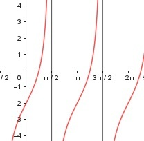

Aufgabe 186 f(x) = 2 * tan (x) - 2 x im Bogenmaß sin x f(x) = 2 * ------- - 2 cos x 1. Ableitung: Produkt-, Summen- und Quotientenregel u = 2 * sin x, u' = 2 * cos x v = cos x, v' = -sin x 2*cos x * cos x - 2 * sin x * (-sin x) f'(x) = ---------------------------------------- cos2 x 2 * cos2 x + 2 * sin2 x f'(x) = --------------------------- cos2 x 2 * cos2 x + 2 * (1 – cos2 x) f'(x) = -------------------------------- cos2 x 2 f'(x) = -------- cos2 x 2. Ableitung: Quotienten- und Kettenregel u = 2, u' = 0 v = cos2 x, v' = 2 * cos x * (-sin x) 2 * 2 cos x * sin x f''(x) = ----------------------- cos4 x 4 * sin x f''(x) = ----------- cos3 x Zur Beurteilung, ob f'''(x) ≠ 0: u = 4 * sin x, u' = 4 * cos x u' 4 * cos x 4 f'''(x) = --- = ----------- = -------- v cos3 x cos2 x --> ist ≠ 0 für alle x ≠ π/2, (3/2)π Polstelle: cos x = 0 x = π/2, (3/2)π Definitionsbereich: 0 ≤ x ≤ 2π x ≠ π/2, (3/2)π Symmetrie zur y-Achse bzw. zum Punkt (0|0): f(-x) = 2*tan (-x) – 2 = 2 * -tan (x) - 2 ≠ f(x) --> keine Achsensymmetrie -f(-x) = -(2*-tan(x) - 2) = 2*tan(x) + 2 ≠ f(x) --> keine Punktsymmetrie Wertebereich: -∞ < f(x) < ∞ Nullstellen: f(x) = 0 2 * tan (x) - 2 = 0 |+2 2 * tan (x) = 2 |:2 π tan (x) = 1 --> 0,785 = --- im Bogenmaß 4 Der Tangens ist am Einheitskreis im 1. Und 3. Quadranten positiv: π x1 = --- 4 π 5π x2 = π + --- = ---- 4 4 π 5π N1(---|0), N2(-----|0) 4 4 Schnittpunkt mit der y-Achse: x = 0 f(0) = 2 * tan (0) - 2 = -2 Sy(-2|0) Extrempunkte: f'(x) = 0 2 ---------- = 0 |*cos2 x cos2 x 2 = 0 Widerspruch --> keine Extrempunkte Wendepunkte: f''(x) = 0 4 * sin x ------------ = 0 |*cos3 x cos3 x 4 * sin x = 0 |:4 sin x = 0 --> x1 = 0, x2 = π, x3 = 2π f(0) = -2, f(π) = -2, f(2π) = -2 WP1(0|-2). WP2(π|-2), WP3(2π|-2) Graph:
